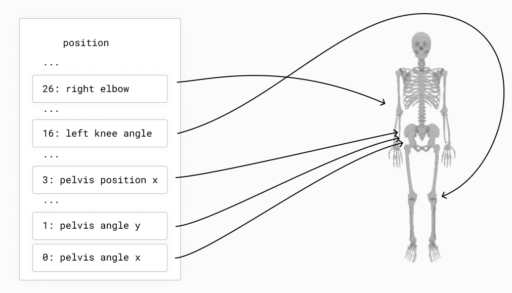

Specify Loss in World Space
Once you start using Nimble to work on non-trivial problems, pretty soon you’ll run into an issue:
Nimble works in generalized coordinates, which is great for efficiency and simulation accuracy, but is terrible if you want to know where things are in world coordinates.
For example, you might want to know the (X,Y,Z) coordinates of the gripper-hand on your robot arm, so you can use it to specify loss. It’s not trivial to go from a set of joint angles to the (X,Y,Z) position of your gripper-hand, so you’re stuck.
We’ve built a tool to help you with this! It’s called nimble.neural.IKMapping.
If you’re impatient, you can download an example using IKMapping on the KR5 robot and figure out how to use IKMapping from context. If you prefer reading a full explanation, read on :)
As a recap from Understand Worlds and Skeletons, remember that we specify ordinary position and velocity in joint space. For example:
{kind=link}
The goal of our nimble.neural.IKMapping object is to define a map from joint space to world space.
To create a simple IKMapping, if you’ve got the KR5 robot loaded in the variable arm, you could write:
ikMap = nimble.neural.IKMapping(world)
ikMap.addLinearBodyNode(arm.getBodyNode("palm"))
That results in the mapping below where we go from the joint space configuration of the KR5 to a world-space that has just the KR5’s palm position.
{kind=link}
The IKMapping can map multiple nodes at once, so you could instead say:
ikMap = nimble.neural.IKMapping(world)
ikMap.addLinearBodyNode(arm.getBodyNode("palm"))
ikMap.addLinearBodyNode(arm.getBodyNode("elbow"))
That results in the mapping below where we go from the joint space configuration of the KR5 to a world-space that has just the KR5’s palm position concatenated with the KR5’s elbow position. (Note the indices in the figure start from the bottom!)
{kind=link}
Now let’s use our mapping with PyTorch.
Suppose we have an IKMapping object called ikMap. We can call:
world_pos = nimble.map_to_pos(world, ikMap, state)
That’ll give us the world positions corresponding to a joint-space vector state.
If instead we want the world velocities, we can call:
world_vel = nimble.map_to_vel(world, ikMap, state)
To recap, to map joint-space into world-space, follow three steps:
Create and configure an
mapping = nimble.neural.IKMapping(world)object, to specify how you’d like to map objects to world space.Configure the
mappingby adding one or more nodes to it. To add the (X,Y,Z) position of a node namedhead, you could writemapping.addLinearBodyNode(head).Call
nimble.map_to_pos(world, mapping, state)to map (in a PyTorch friendly way) a state vectorstateto a vector of world space positions. Alternatively, you can callnimble.map_to_vel(world, mapping, state)to get the velocities in world space for your mappings.
You can download a working example of using IKMapping on the KR5 robot and play around with it.